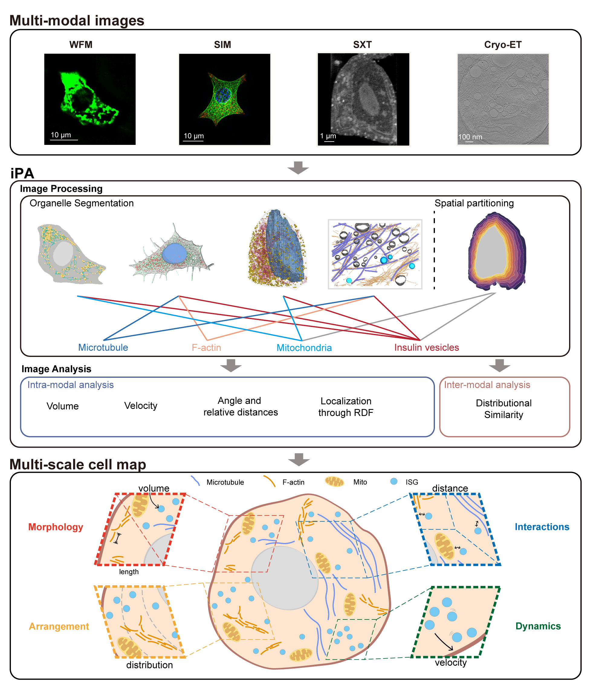

Integrated Processing and Analysis Toolkit (iPA)
iPA is an open-source Python toolkit for comprehensive analysis of cellular and subcellular imaging data. Our platform streamlines the workflow from raw image processing to advanced quantitative analysis, enabling researchers to extract biologically meaningful features from diverse microscopy modalities including cryo-electron tomography ( cryo-ET), soft X-ray tomography ( SXT), structured illumination microscopy ( SIM), and widefield microscopy( WFM).
Multi-Modal Cellular Imaging Analysis
- The included cellular imaging analysis pipeline can be modified to:
Load various microscopy data formats (MRC, TIFF, etc.)
Process and segment organelles (mitochondria, vesicles, nucleus and whole-cells)
Extract morphological and spatial features
Perform partitioning on cytoplasmic regions
Generate visualization results
{kind=link}

Dependencies
numpy
mrcfile
tifffile
matplotlib
pandas
scipy
scikit-image
tqdm
plotly
if you use segmentation modules, you will also need: * pytorch
Supported Imaging Modalities
Cryo-ET: Cryo-electron tomography analysis
SIM: Structured illumination microscopy
SXT: Soft X-ray tomography
WFM: Wide-field microscopy